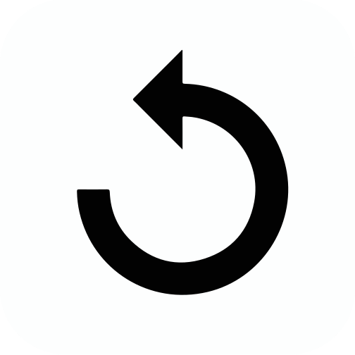
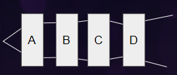

✕



Two lasers are placed as shown in the figure. Drag and drop the lenses in the dotted box and observe the path of light rays.
Convex
Concave
Next
Identify the type of lens present in the box based on the path of the light rays.

A:Convex, B:Concave
A:Concave, B:Convex
C:Concave, D:Convex
C:Convex, D:Concave
Submit
Solution:
We know that convex lens converges light and concave lens diverges light. In this figure, through A light is convering thus, A:convex lens, through B light is diverging thus, B:concave lens, through C light is again converging thus, C: convex lens and through D light is diverging thus, D:concave lens.